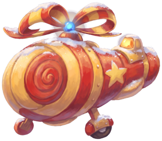
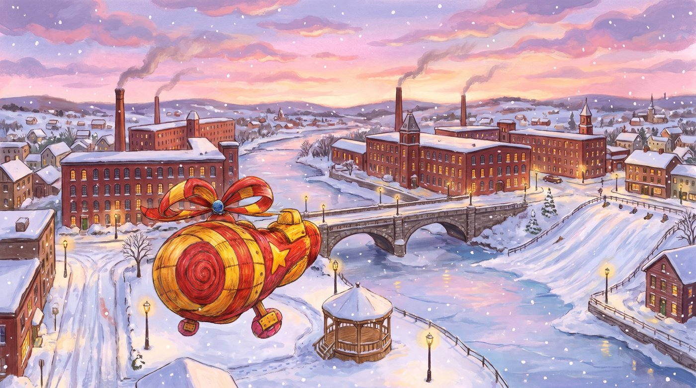

Sledding on River Hill
Snowballs0 To the river
Drone camera
Clara

Sledding on River Hill
The long slope from River Street runs down, down, down to the Blackstone River. The drone will watch from above while Clara and Bernie slide.
- Steer with the left and right arrow keys, or slide your finger on the snow.
- Up arrow goes faster. Down arrow goes slower.
- Burst through snowballs. Bushes just give a soft bump.
- There is no timer and no way to lose.
Voices are AI-generated. The narrator is from The Woonsocket Wonders, Episode 1.
You reached the Blackstone River
0 snowballs burst
Bernie is very proud of you.
Settings
Look
Text size
Music
Sounds
Drone camera label on screen
Clara's voice
Sound captions
Left and Right buttons (phones and tablets; you can also slide a finger on the snow)
Calm motion (no falling snow, gentler speed)